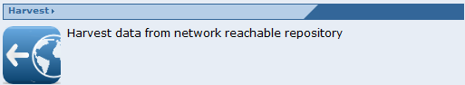
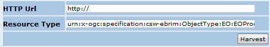
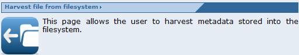
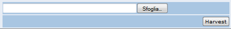

The database of a catalogue service can be populated either via its Harvest SOAP operation (if implemented) or through a web page placed under the Tools section.
The Toolbox allow harvesting a resource from a network location or directly from the filesystem.
To harvest a resource from a network location click on the Harvest section

a form should be displayed

enter the URL of the resources to be harvested and then click on Harvest.
To harvest a resource from the local filesystem click on the Harvest file from filesystem section

a form should be displayed

browse the filesystem and select the file to be harvested then click on harvest.
 It must be noted that the harvest operation refers to the services
selected and that the SOAP Harvest operation must be implemented.
Otherwise an error is raised.
It must be noted that the harvest operation refers to the services
selected and that the SOAP Harvest operation must be implemented.
Otherwise an error is raised.